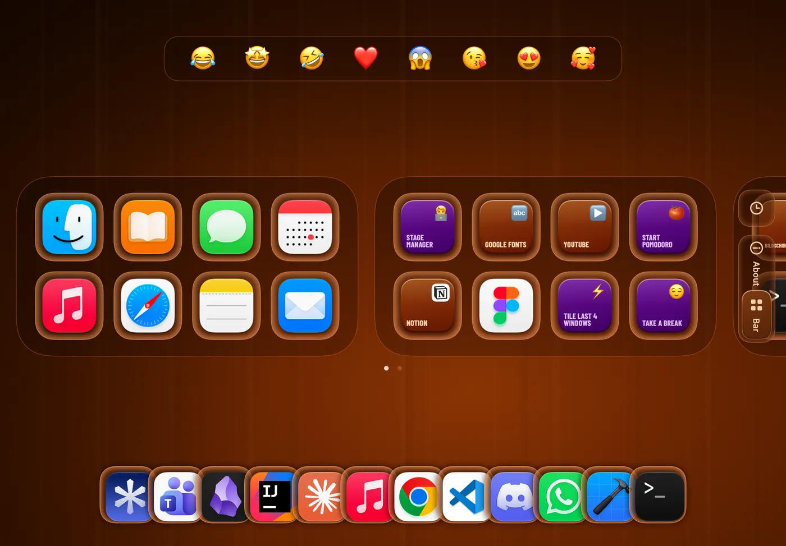
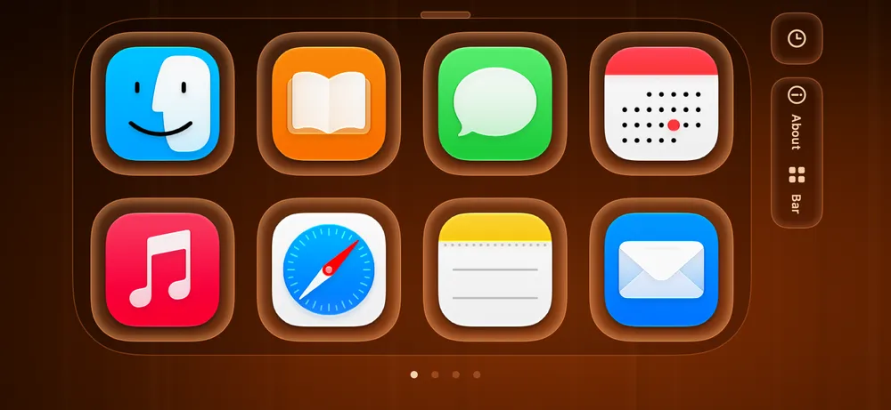
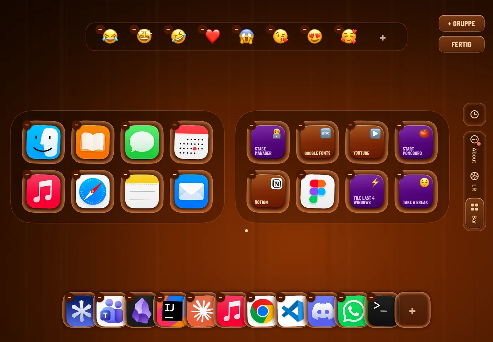
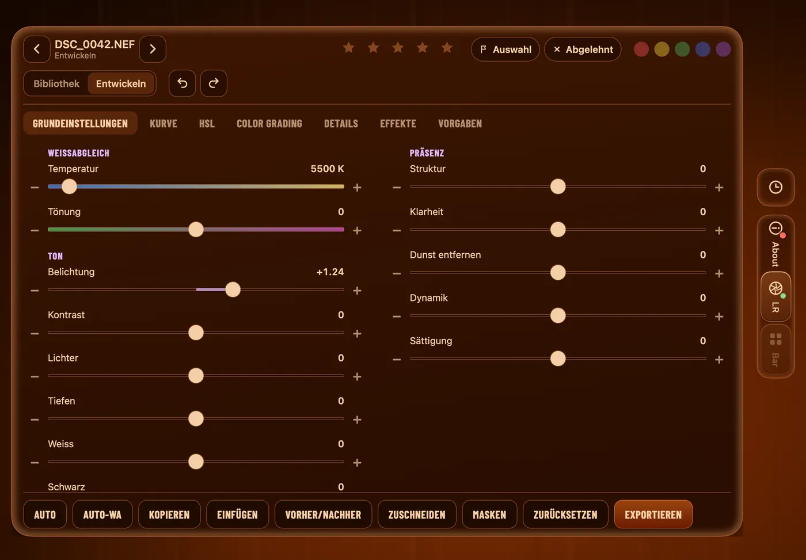

Kacheln nach deinem Geschmack
Langes Drücken startet den Bearbeitungsmodus: Kacheln verschieben, Aktion, Farbe, Symbol oder eigenes Bild wählen. Emoji-Leiste und Dock lassen sich genauso anpassen.
Für {{SYSTEM}} · neu
Ein Tipp auf eine Kachel öffnet eine App oder einen Link, sendet eine Tastenkombination, fügt ein Emoji ein, ordnet Fenster an oder startet einen Timer. Dazu ein eigener Tab für Lightroom Classic mit allen wichtigen Reglern.
Kostenlos · läuft auf deinem eigenen {{HOST}}, keine Cloud · Quellcode auf GitHub
Hinweis: Die Windows-Version ist neu und wird gerade erprobt. Wenn bei der Installation etwas hängt, die Ausgabe von install.ps1 aufbewahren und melden.

Langes Drücken startet den Bearbeitungsmodus: Kacheln verschieben, Aktion, Farbe, Symbol oder eigenes Bild wählen. Emoji-Leiste und Dock lassen sich genauso anpassen.
Die App-Auswahl zeigt alle Apps aus /Applications mit ihren echten Icons.
Die App-Auswahl zeigt alle Programme aus dem Startmenü, auch Store-Apps, mit Icons. Fehlt eines: copper-deck add-app "C:\…\Programm.exe".
iPhone und iPad zeigen jede Änderung sofort. Ein Timer läuft auf allen Geräten gleich und meldet sich am Ende am {{HOST}}.
Nur gekoppelte Geräte, feste Aktionsliste, keine Befehle oder Skripte. Die Verbindung ist verschlüsselt und bleibt in deinem Netz oder deinem Tailscale.
Einmalig am {{HOST}}, dauert etwa 10 Minuten.
Im Terminal (Homebrew vorausgesetzt, brew.sh):
xcode-select --install
brew install node mkcert git
mkcert -installgit clone https://github.com/Mauriziofio09/mobileStreamDeck.git
cd mobileStreamDeck
scripts/install.shDas Skript baut alles, richtet den Helper als LaunchAgent ein (startet bei der Anmeldung) und legt das Lightroom-Plugin ab.
macOS fragt nach Bedienungshilfen, Automation und Mitteilungen für „Copper Deck Helper“. Alle erlauben. Den Stand zeigt copper-deck permissions oder in der App unter About.
In PowerShell (keine Administratorrechte nötig):
winget install OpenJS.NodeJS.LTS
winget install FiloSottile.mkcert
winget install Git.GitPowerShell danach schliessen und neu öffnen, dann:
mkcert -installgit clone https://github.com/Mauriziofio09/mobileStreamDeck.git
cd mobileStreamDeck
powershell -ExecutionPolicy Bypass -File scripts\install.ps1Das Skript baut alles, auch das kleine Windows-Programm (mit dem C#-Compiler, der in Windows steckt), richtet den Autostart über die Aufgabenplanung ein und legt das Lightroom-Plugin ab.
Fragt Windows nach Node.js: für private Netzwerke zulassen. Ist dein WLAN als „öffentlich“ eingestuft, unter Einstellungen → Netzwerk und Internet → WLAN auf Privat stellen.
copper-deck ca zeigt rootCA.pem im Finder. Per AirDrop aufs iPhone senden (oder über iCloud Drive → App Dateien).
copper-deck ca zeigt rootCA.pem im Explorer. Per Mail an dich selbst oder über OneDrive/iCloud aufs iPhone bringen und antippen.
Dann Einstellungen → Profil geladen → Installieren und unter Allgemein → Info → Zertifikatsvertrauenseinstellungen für „mkcert“ einschalten.
In Safari die Adresse öffnen, die das Installationsskript am Ende zeigt (z. B. {{EXAMPLE_URL}}) → Teilen → Zum Home-Bildschirm.
Am {{HOST}} copper-deck pair ausführen und den 6-stelligen Code in der App eingeben. Fertig.
iPhone und {{HOST}} müssen sich erreichen. Zuhause im selben WLAN klappt das. Firmen- und Gäste-WLANs trennen Geräte oft voneinander, dann hilft Tailscale (unten).


Mit Tailscale verbindet sich das iPhone überall direkt mit deinem {{HOST}}: zuhause, im Firmen-WLAN und über Mobilfunk. Kostenlos für private Nutzung.
Tailscale auf {{HOST}} und iPhone installieren, mit demselben Konto anmelden.
Im Tailscale-Admin unter DNS „MagicDNS“ und „HTTPS Certificates“ aktivieren.
copper-deck tailscale zeigt deine Adresse (https://…ts.net:7443). Diese in Safari öffnen, zum Home-Bildschirm hinzufügen, koppeln. Copper Deck holt dafür ein echtes Zertifikat, das iPhone braucht kein Profil.

Der Tab LR steuert Lightroom Classic (ab Version 10) direkt: 64 Regler von Belichtung bis Color Grading, Sterne, Markierungen, Farben, nächstes Foto, Vorgaben, Kopieren/Einfügen, Vorher/Nachher und Export.
Adobe Lightroom (Cloud-Version) wird auch unterstützt, aber ohne Regler: Copper Deck wählt dort Menüeinträge aus – Sterne, Markierungen, Farben, Navigation, Bedienfelder, Werkzeuge, Auto, Kopieren/Einfügen und Export. Regler auf Werte setzen kann nur Lightroom Classic mit seiner Plugin-Schnittstelle.
iPhone und {{HOST}} erreichen sich nicht. Sind beide im selben WLAN (nicht Gäste-WLAN)? Firmennetze trennen Geräte oft: dann Tailscale verwenden oder den Hotspot des iPhones. Unter Windows ausserdem: Netzwerkprofil „Privat“ und Firewall-Freigabe für Node.js.
Das mkcert-Zertifikat ist auf dem iPhone nicht installiert oder nicht freigegeben. Profil installieren und unter Zertifikatsvertrauenseinstellungen einschalten. Mit Tailscale entfällt das.
Mit copper-deck pair einen neuen holen. Ein Code gilt 5 Minuten und nur einmal.
In der App unter About die Berechtigungen prüfen. Bedienungshilfen und Automation für „Copper Deck Helper“ erlauben.
Läuft das Fenster im Vordergrund als Administrator (z. B. Task-Manager), lässt Windows keine Eingaben von Copper Deck zu. Die App nennt das Programm.
Das Skript wie oben mit -ExecutionPolicy Bypass starten.
Lightroom Classic starten und unter Datei → Zusatzmodul-Manager prüfen, ob „Copper Deck“ aktiv ist. Nach der ersten Installation Lightroom einmal neu starten.
Im Ordner git pull, dann das Installationsskript erneut ausführen. Die App auf dem iPhone bietet danach „Aktualisieren“ an.
Die vollständige Anleitung mit allen Befehlen steht im README auf GitHub.